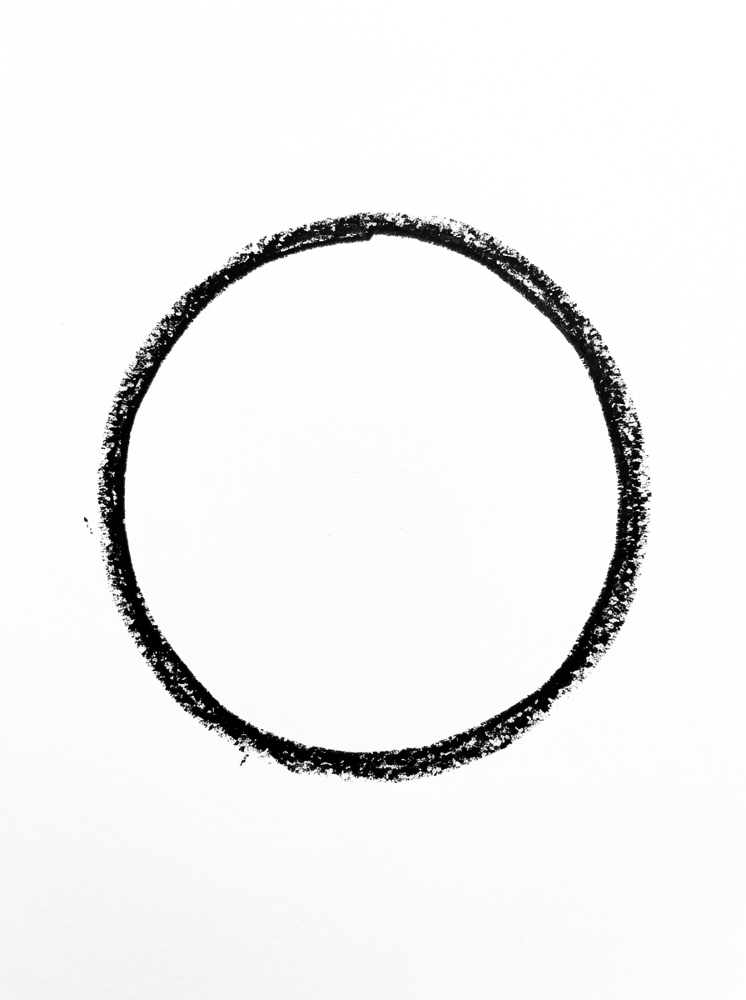
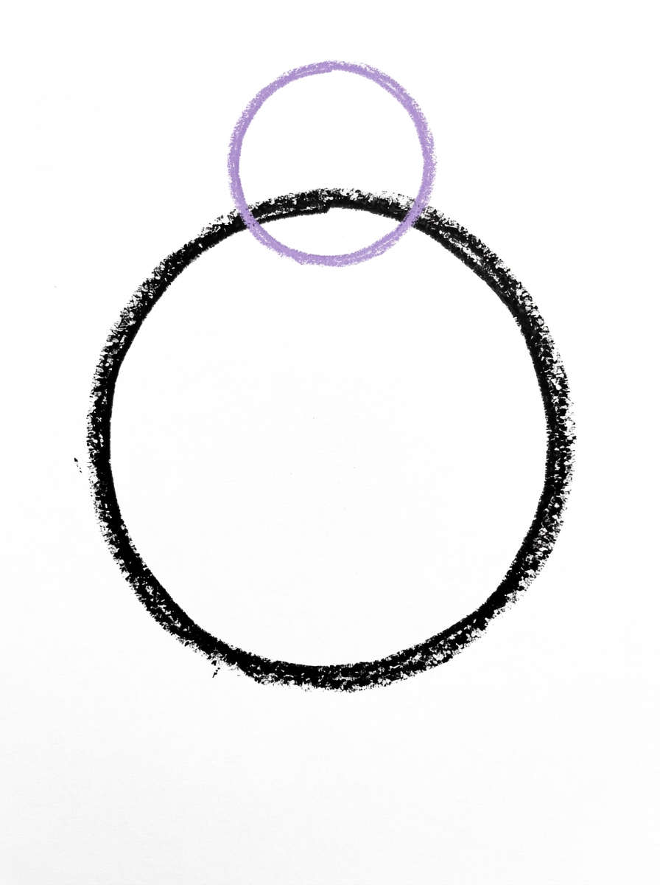
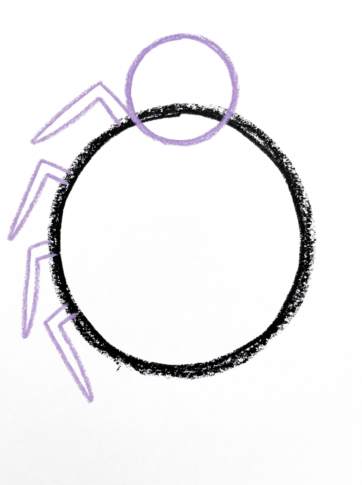
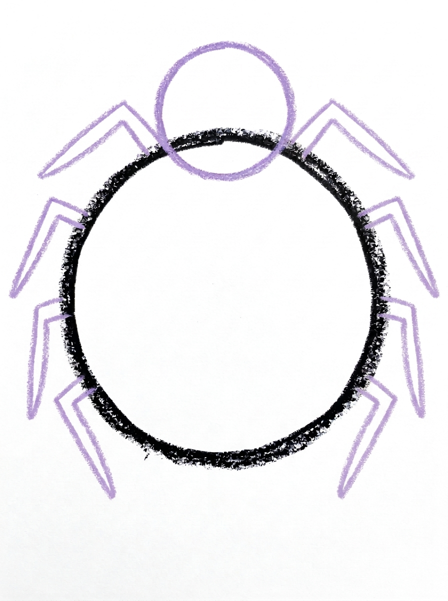
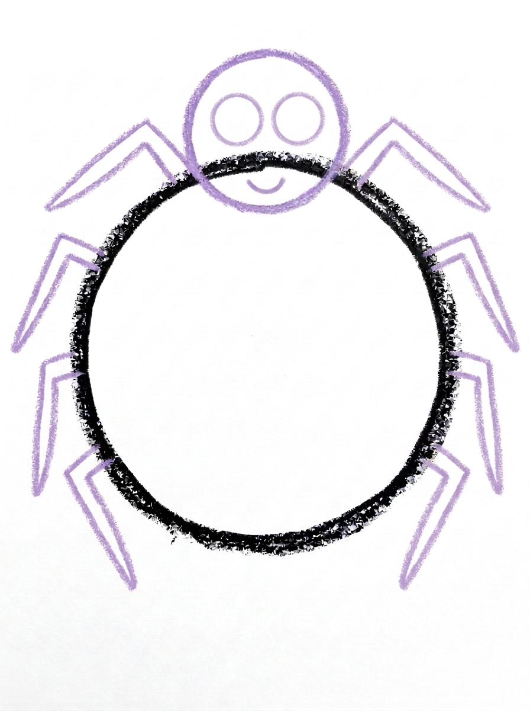

Spider Drawing for Kids How to Draw A Spider in 6 Easy Steps
Quick Answer
Draw a spider in six steps: one big circle for the body, a smaller circle on top for the head, four bent legs on the left side and four matching legs on the right, then two round eyes and a smile before coloring it in. Made for ages 3 and up — no signup needed, just print and draw.
At a Glance
- Subject: How to draw a spider
- Ages: 3+
- Steps: 6 steps
- Time: ~15 min
- Difficulty: Easy
- Supplies: Paper, crayons
A friendly spider is one of the most satisfying first animals to draw, because two simple circles do almost all of the work. The eight bendy legs are where the magic happens — kids love counting them out, four on each side, until the drawing suddenly looks like a real spider.
✏️ Draw Your Spider in 6 Easy Steps
One step per box — this step by step spider drawing shows each new part in a different color so kids can see exactly what changed.
Step 1: The Body

Draw one big circle in the middle of your paper. This is your spider's body.
Step 2: The Head

Draw one smaller circle overlapping the top of the big circle so the two circles touch. This is the spider's head.
Step 3: The Left Legs

Draw four legs on the left side of the spider. Each leg is two lines with one bend in the middle — up first, then down — and every leg touches the side of the body.
Step 4: The Right Legs

Draw four more legs on the right side of the spider, matching the left side. Now your spider has eight legs!
Step 5: The Face

Draw two big round eyes side by side on the head, and one small curved smile line below the eyes.
Step 6: Color It In

Color your spider! Deep brown for the body, the head and all eight legs, and solid black for the two eyes. Great drawing!
📊 Spider Drawing by Age
Every age can join in — just adjust the job.
| Age | What they can do | Tip |
|---|---|---|
| 3-4 | Draw the two circles with encouragement and add bent legs, counting to four on each side with help. | Draw the body circle nice and big — little hands need plenty of room for eight legs to fit around it. |
| 4-5 | Draw both circles and all eight legs independently, bending each leg once in the middle. | Count the legs out loud together as each one lands — it prevents the classic seven-legged spider. |
| 6+ | Complete the whole spider alone and add extras like a web, a patterned back or a second smaller spider. | Challenge them to draw a baby spider beside the first using the same six steps, just smaller. |
🖨️ Download Your Free Spider Drawing Printable
The printable lays out all 6 steps one per box, big enough for little hands — kids draw right alongside each step.
⬇️ Open Free Printable 🖨️ Print🎁 Free printable for ages 3+
🕷️ Spider Web Counting
Turn the finished spider into a counting game. Draw a big web around it with straight crayon lines and curved lines connecting them, then ask your child to count everything: eight legs, two eyes, and the sections of the web. Hide a tiny drawn fly in one corner of the web and see how fast they can spot what the spider is having for lunch. Older kids can draw a second, smaller spider and count all sixteen legs together.
What You'll Need to Draw A Spider
You only need paper and a pencil for the drawing steps, plus crayons or markers for the final color. Deep brown covers the body, head and all eight legs, with black for the two eyes. A cup or lid to trace makes the big body circle easier for the youngest artists, and black paper with a silver or white crayon makes a fun spooky version of the same spider.
What They're Learning
This tutorial practices circles in two sizes, one overlapping the other, which is an early lesson in how simple shapes combine. The legs teach a bend-and-turn line — up first, then down — and because the left legs mirror the right, it is also a gentle introduction to symmetry. Best of all, it is a real counting lesson: spiders have eight legs, four per side, so children count in two groups of four and can check their own drawing against the true number.
Make It Yours
Once the basic spider feels easy, vary it: give the spider a patterned back with spots or stripes, hang it from a thread drawn down from the top of the page, or add a whole web behind it. A spider family — one big, one tiny — is a sweet next step, and for Halloween the same drawing works colored solid black with a bright orange smile, while a garden version can have purple legs and a pink body.
🛒 Our Favorite Drawing Supplies
These are the supplies we reach for in our own home — washable (because kids), quality paper, and enough colors to avoid fights.
As an Amazon Associate, MomYouNeedThis earns from qualifying purchases — at no extra cost to you.
💡 Spider Drawing Tips for Parents
The legs are the step where things go sideways — literally. Kids often crowd all eight legs onto one side or stop at six. Keep the two rounds separate: finish all four left legs, count them out loud together, then do the right side. If a leg lands in a funny spot, leave it alone — a slightly wonky spider still reads as a spider, and rubbing out and redrawing tends to cost more confidence than it fixes.
Each leg is just two lines with one bend, like a little tent: up first, then down to the ground. Demonstrate one leg slowly, then hand over the pencil. The bend is what makes it look like a spider instead of a sun with rays, so praise the bends whenever they appear, even the wobbly ones.
✏️ Spider Drawing Step by Step
This spider drawing is two circles and eight bent lines. The big circle is the body, the smaller circle overlapping its top is the head, and everything else — legs, eyes, smile — is lines added to those two shapes.
The overlap in Step 2 is the load-bearing join. The head circle must sit on top of the body circle with the two shapes touching, because the legs in the next two steps take their positions from the body’s sides below that join. A head drawn beside the body, or floating above it, leaves the legs with no clear body to leave from.
Notice the order the details arrive: legs first, face last. The face is held back until Step 5 so the head stays empty while both leg steps are worked through on either side of it — the smile is the reward shape, drawn into clear space once the busy work is done.
See free spider printable for more.
✏️ One Shape Per Step, Six Steps Total
Check this spider drawing circle by circle. Body: one big round shape, closed all the way around. Head: a smaller circle that overlaps the top of the body — the two outlines should cross, not just kiss at one point.
Leg check: four legs leave each side of the body, every leg touches the body’s side, and every leg has its one bend. A leg with no bend is a ray, and a leg that starts on the head has wandered.
Face check: both big round eyes and the smile should sit on the small head circle, not stray onto the body. Then colour: deep brown for body, head and legs, solid black for the eyes only — if brown lands in the eyes, the face disappears into the head.
See free spider printable for more.
🕷️ Spider Counting Drawing
The finished spider is a counting toy. Its parts come in countable sets — two circles, two eyes, eight legs — so once it is coloured, ask your child to count each set out loud and point as they go: legs in two groups of four, one group per side.
Then stretch it: how many legs do two spiders have? Draw a second spider and count again — sixteen. Three spiders, twenty-four. The drawings multiply the counting practice without a single worksheet, and each new spider is another round of the same six steps.
A row of finished spiders makes a counting wall for a minibeast theme or a friendly Halloween display — and because each spider’s legs were counted as they were drawn, kids can re-count the wall and check their own work.
See free spider printable for more.
❓ Spider Drawing FAQs
What is the easiest way to draw a spider?
Start with two circles — a big one for the body and a smaller one overlapping the top for the head — then add four bent legs on each side, two round eyes and a smile. That is the whole method in this tutorial, and it works because every step is a single simple shape.
What age is this spider drawing for?
It is made for ages 3 and up. Three- and four-year-olds can manage the two circles and scribble in bent legs with a grown-up counting along, while most five- and six-year-olds can complete all six steps on their own.
What supplies do we need?
Just paper and a pencil for drawing, plus crayons or markers for the coloring step — deep brown and black are the only colors the finished spider needs. A cup or lid to trace helps younger kids make the big body circle.
Is the printable really free?
Yes — every printable on MomYouNeedThis is 100% free to download and print. No signup, no payment, just tap the download button.
How do I print it?
Open the free PDF and print it at 100% scale, not 'fit to page', so the step pictures come out at the size they were designed. One page is the whole tutorial, and you can print fresh copies whenever your child wants another try.
How many legs should the spider have?
Eight — four on each side. That is why the tutorial splits the legs into two steps, four left legs in Step 3 and four right legs in Step 4, so kids can count each side as they go.
Why does this spider only have two eyes?
Real spiders have eight tiny eyes, but for young artists two big round eyes make the face friendly and easy to read. Older kids who want it more realistic can add tiny extra dots around the two main eyes.
My child draws the legs as straight lines. Is that okay?
Completely fine — straight legs still give you a very recognizable spider. The bend (up first, then down) comes with practice, and most kids start adding it on their own after a few tries.
📚 Keep Exploring
- ✏️ All 53 Drawing Tutorials 53 free step-by-step drawing tutorials for kids.
- 🎃 Halloween Coloring Free printable Halloween coloring pages for kids.
- ✏️ Drawing Practice Free printable drawing pre-writing worksheet for toddlers.